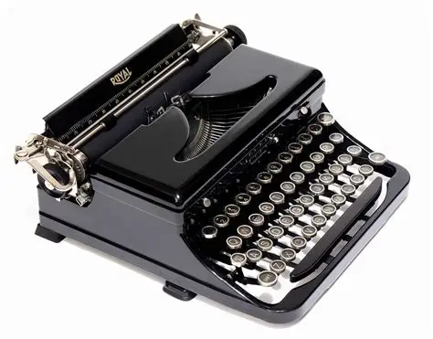

Home Page | Treasures in Detail | Secure Your Treasure

Title: Vintage Mechanical Typewriter
Detailed Description:
This early 20th-century typewriter reflects the golden age of mechanical writing.
Built with a sturdy steel frame and enameled keys,
it was a reliable companion for writers, journalists,
and office workers before the rise of electronic word processors.
History: Popular during the 1900s–1930s, typewriters revolutionized communication by standardizing written documents.
Material: Steel body, enamel-coated keys, and a ribbon mechanism.
Size: Approximately 30 cm wide, 25 cm deep, and 15 cm tall.
Condition: Well-preserved with minor wear on the keycaps and
slight fading of the ribbon mechanism, adding authentic vintage character.